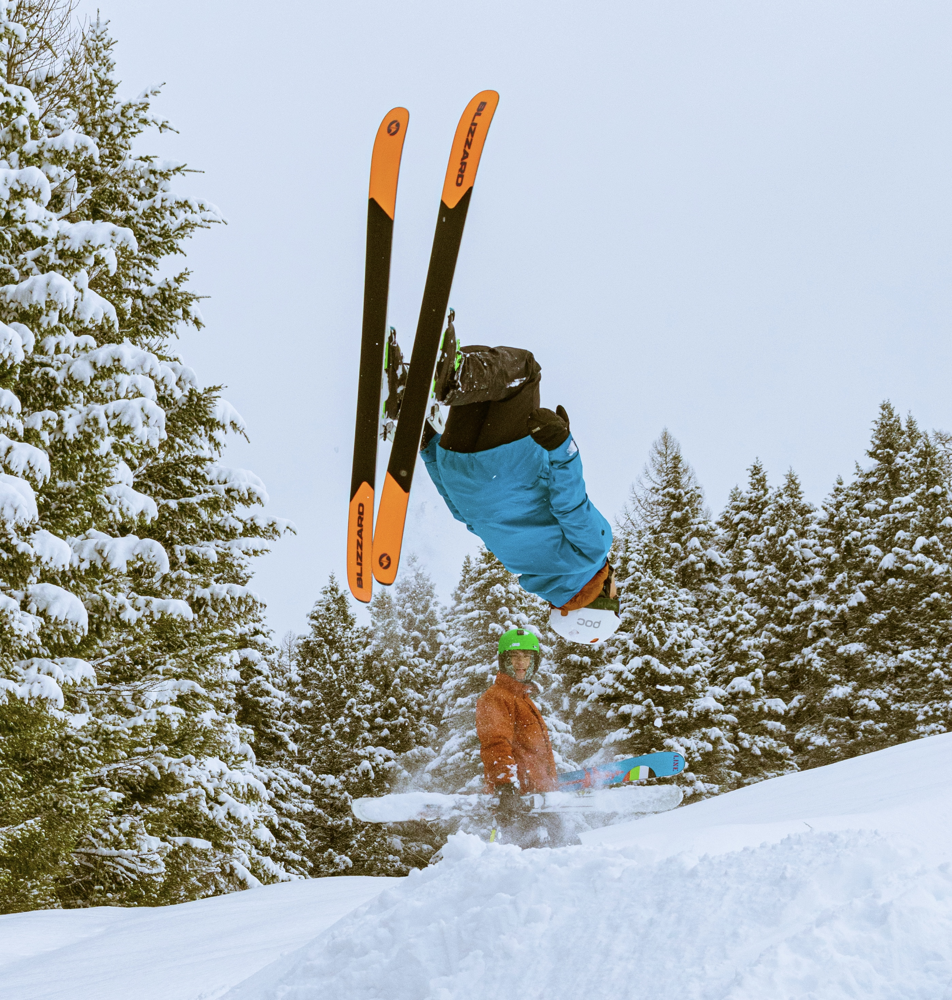
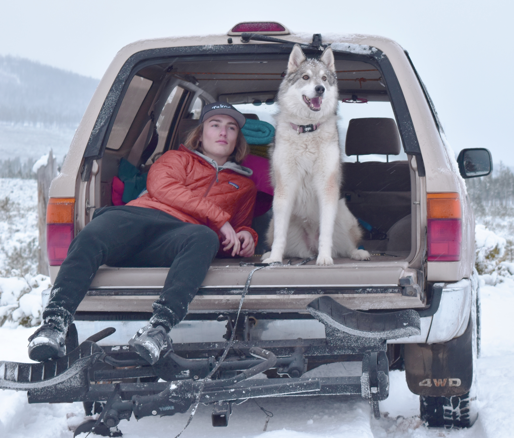
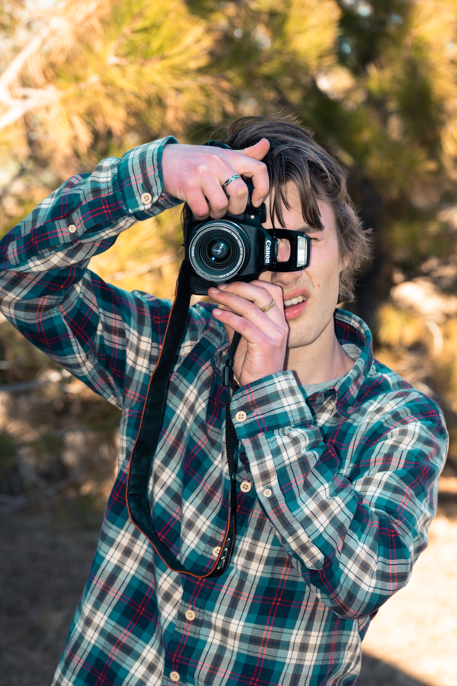
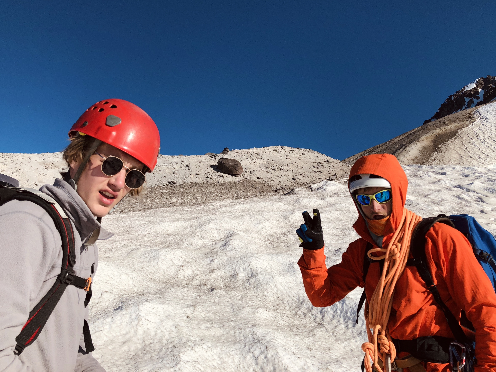

About COLTON CREATIVE
Colton Seymour
Growing up, I realized that adventure was a crucial part of my day-to-day life. My parents love to travel--as do I--and I was fortunate enough to have them take me to some incredible places around the world. In my teenage years, I began documenting my experiences through photo and video. Since then, I've discovered that I want to make photography, videography, and editing into a career. Nowadays, it's rare that I go anywhere without all of my equipment. In fact, I fell in love with media expression so much that I decided to major in Media Arts at the University of Montana. This is where I began to really develop a 'passion for creativity.' As far as I know, I plan to continue adventuring and furthering my studies in the realm of Media Arts, while documenting every step of the way.
Check out some of the things I like to do:
 
 
Back to Homepage